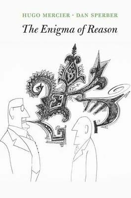
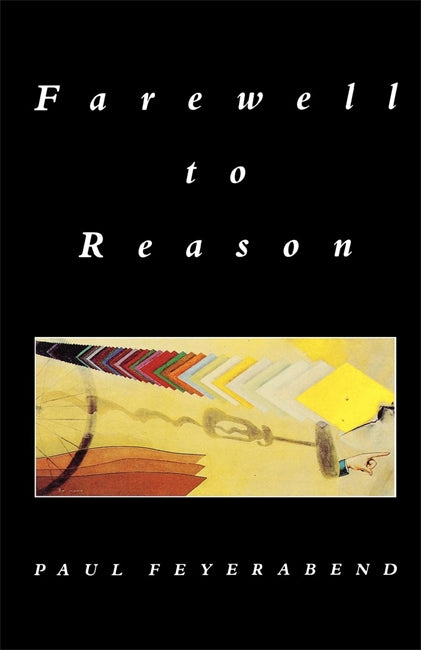
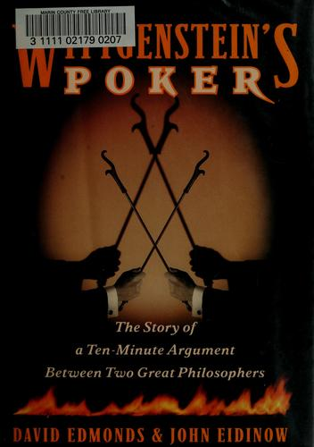
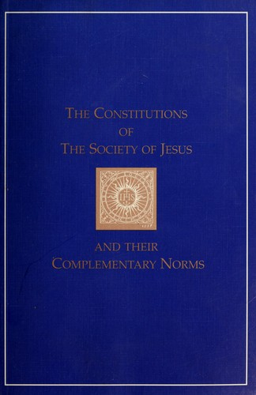
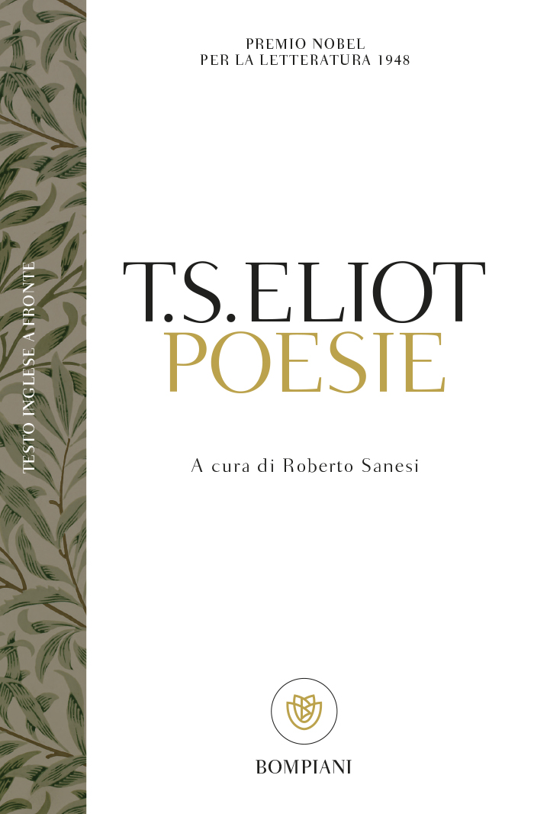

43:17 · 7 OPERE
La ragione bistrattata ed esiliata.
Il filo del discorso
Che cosa perdiamo quando intendiamo la ragione soprattutto come capacità di giustificarci e persuadere? Il relatore affronta la domanda attraverso una critica di The Enigma of Reason di Mercier e Sperber, cui accosta Farewell to Reason di Feyerabend. Legge alcuni passi, discute il rapporto fra correttezza di un argomento e condotta di chi lo sostiene e ricorre a Eratostene, ai paradossi di Zenone e ai problemi della fisica. Allarga poi il discorso alla modernità, proponendo una genealogia politica che passa per Cartesio, Richelieu, la Controriforma e i gesuiti. Orwell, Eliot e Socrate accompagnano la conclusione: la ragione viene difesa come ricerca gratuita e disponibilità a essere corretti. La scheda distingue questa polemica dalla teoria degli autori criticati, che separa la produzione spesso parziale delle ragioni dalla valutazione degli argomenti altrui e riconosce il valore del confronto. Sono inoltre precisati l’ordine delle edizioni di Mercier e Sperber, la poesia di Eliot e la differenza fra un problema aperto della gravità quantistica e la già avvenuta integrazione di relatività ristretta e fisica quantistica.
I libri nel discorso

The Enigma of Reason
Copertina: Harvard University Press, 2017, ISBN 9780674368309: originale inglese. La successiva traduzione francese, L’Énigme de la raison, Odile Jacob 2021, non è la fonte di questa edizione.
Immagine autentica dell’opera, controllata visivamente; l’edizione di riferimento non è attribuita al filmato.
Titolo introdotto esplicitamente; autori Mercier e Sperber nominati a 5:41. Originale inglese HUP 2017, non traduzione dal francese.
Passaggio 0:21 ↗ · Fonti e libro ↗
Farewell to Reason
Copertina: Verso, edizione in brossura gennaio 1988, 336 pagine, ISBN 9780860918967; prima pubblicazione del saggio nel 1987.
Immagine autentica dell’opera, controllata visivamente; l’edizione di riferimento non è attribuita al filmato.
Paul Feyerabend e Farewell to Reason espliciti; anno 1987 richiamato a24:28.
Passaggio 22:07 ↗ · Fonti e libro ↗
Wittgenstein’s Poker: The Story of a Ten-Minute Argument Between Two Great Philosophers
Identificazione probabile
Copertina: HarperCollins / Ecco, 2001, ISBN 9780066212449. Copertina dell’esemplare statunitense con etichetta della Marin County Free Library conservata; non è l’edizione britannica Faber.
Immagine autentica dell’opera, controllata visivamente; l’edizione di riferimento non è attribuita al filmato.
Libro famoso sull’attizzatoio fra Wittgenstein e Popper: titolo non pronunciato, identificazione probabile.
Passaggio 23:06 ↗ · Fonti e libro ↗
1984
Copertina: Newton Compton · edizione illustrativa
Orwell e il passo sulla libertà di dire una semplice verità aritmetica: riferimento a 1984.
Passaggio 25:24 ↗ · Fonti e libro ↗
Costituzioni della Compagnia di Gesù
Identificazione probabile
Copertina: Immagine dell’edizione inglese The Constitutions of the Society of Jesus and Their Complementary Norms, Institute of Jesuit Sources, 1996, 502 pagine, ISBN 9781880810248; traduzione di George E. Ganss e collaboratori. Comprende norme complementari successive al testo ignaziano.
Immagine autentica dell’opera, controllata visivamente; l’edizione di riferimento non è attribuita al filmato.
Similitudine perinde ac cadaver attribuita a Loyola: probabile richiamo alle Costituzioni547, titolo non nominato.
Passaggio 35:00 ↗ · Fonti e libro ↗
The Hollow Men (Gli uomini vuoti)
Copertina della raccolta Poesie che contiene Gli uomini vuoti: Bompiani · Poesie · 2000 · a cura e traduzione di Roberto Sanesi
La copertina rappresenta Poesie di Eliot a cura di Roberto Sanesi. L’inclusione di Gli uomini vuoti è documentata dal catalogo e dall’articolo dell’editore. Non si presenta il titolo della poesia come un volume autonomo né si attribuisce questa traduzione alla lettura estemporanea del relatore.
Conclusione sul finire del mondo con un lamento, riconducibile a The Hollow Men; il relatore la attribuisce erroneamente ai Quattro quartetti.
Passaggio 38:42 ↗ · Fonti e libro ↗
Gorgia
Identificazione probabile
Copertina: Gorgia, Bompiani, giugno 2001, a cura di Giovanni Reale, testo greco a fronte, 384 pagine, ISBN 9788845291111. Copertina ufficiale blu, bianca e verde acqua con titolo e autore; edizione di riferimento non identificata nel video.
Immagine autentica dell’opera, controllata visivamente; l’edizione di riferimento non è attribuita al filmato.
Socrate accoglie chi lo corregge: riscontro tematico in Gorgia458a, ma il titolo non è pronunciato e non è prova di lettura di una edizione precisa.
Passaggio 42:17 ↗ · Fonti e libro ↗